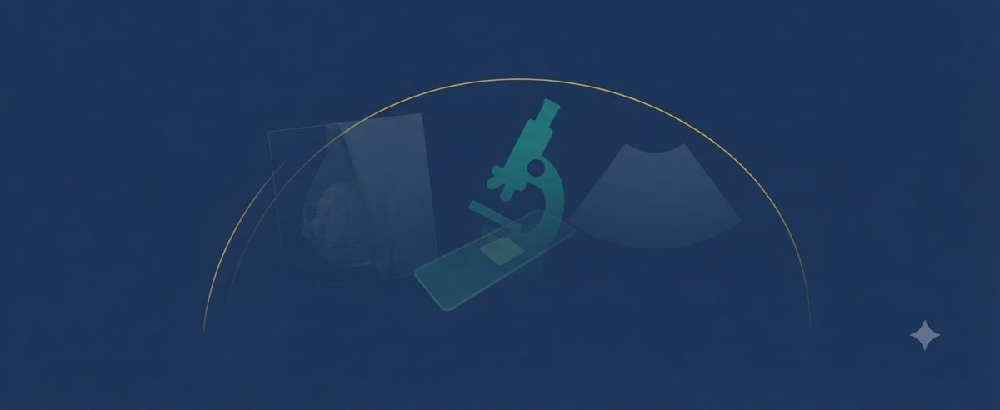
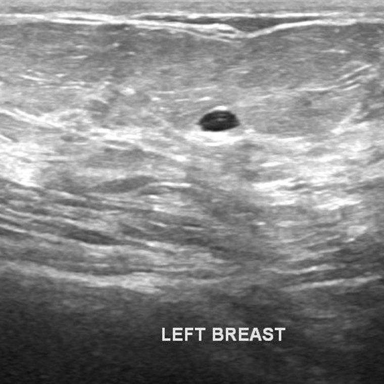

Breast cancer is not read one way. A radiologist reads a mammogram; a pathologist reads a histology slide; a sonographer reads an ultrasound; a lab reads fine-needle-aspirate measurements. You cannot push a mammogram through a histology model. So AEGIS Breast is not one classifier — it is a Unified Breast Station: one engine that routes each modality to its own specialist, and each specialist reports its own honest score with a defer-to-human grey zone. No score is ever fused into a single false verdict.
A quick, honest way to feel what these specialists do. You are shown a real breast image from one of the modalities; decide whether it looks benign / normal or suspicious — refer. The AEGIS engine then reveals what to look for. It is harder than it sounds — which is exactly why a screening aid, and a human in command, help.

Real de-identified research image · BUSI / BACH / CBIS-DDSMGame images are real, de-identified samples from public research datasets — breast ultrasound (BUSI), histology microscopy (ICIAR-2018 BACH), and mammography (CBIS-DDSM) — shown for education only, never a diagnosis. Ground-truth labels are the datasets’ own. The decorative banner at the top is an AI-generated illustration.
The AEGIS Unified Breast Station brings every AEGIS breast specialist under one roof and routes each modality to the specialist that reads it. It runs entirely on a local machine — no image leaves it — and it is honest by construction: each specialist stands on its own validated metric, and any case that lands in the grey zone is flagged for a clinician, never auto-called. AEGIS scores; a clinician confirms.
Each row is a separate validated specialist. The strong diagnostic-grade readers clear the conventional 0.90 floor; the weaker ones are reported as weaker, with the reason, rather than dressed up — that honesty is the point.
| Specialist | Modality / input | Champion | Validation ROC-AUC |
|---|---|---|---|
| DIAG | WDBC fine-needle-aspirate (30 nucleus measures) | Fuzzy Linear-SVC | 0.9955 |
| US | Breast ultrasound (BUSI) | Nu-SVC | 0.9328 |
| BreaKHis | Tissue microscopy (patient-separated) | Fuzzy SVM-RBF | 0.9302 |
| BACH | Histology microscopy (4-class carcinoma) | Nu-SVC | 0.9048 |
| HIST | Histology H&E patch (PatchCamelyon) | Logistic Regression | 0.9014 |
| MAMM | Mammogram (CBIS-DDSM, whole-film @224px) | Logistic Regression | 0.7149 (screening baseline — see note) |
| PROG | WPBC prognostic measures (recurrence, n=198) | Logistic Regression | 0.6595 (risk aid, not a gate) |
Honest notes: MAMM 0.71 is a legitimate whole-film screening baseline — malignancy is a small region of a large mammogram, and downscaling to 224px sheds the fine calcification detail; ROI-cropped patches at higher resolution are the lever to lift it. PROG 0.66 is recurrence prediction on 198 single-source patients — genuinely hard, so it is a risk aid with a caveat, never a diagnostic gate. HIST, DIAG, US, BACH and BreaKHis are the real diagnostic-grade gates.
AEGIS Breast is a research demonstration. If you would like to share a breast image for an illustrative, educational read — not a diagnosis — you can reach the programme through the Contact channel. Please read the terms below first; sending an image means you accept them.
This opens your email app to aegisloh@aegishumanai.com with the terms pre-acknowledged. Attach your de-identified image before sending.